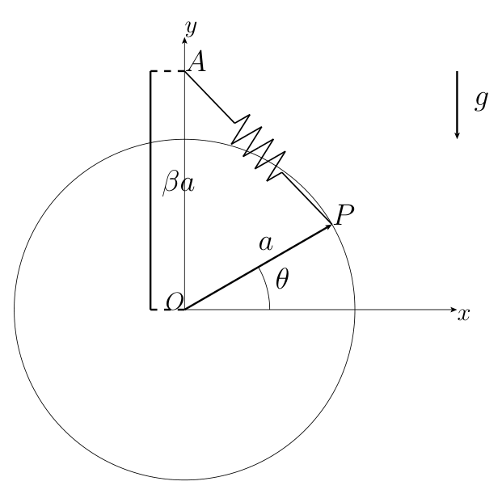
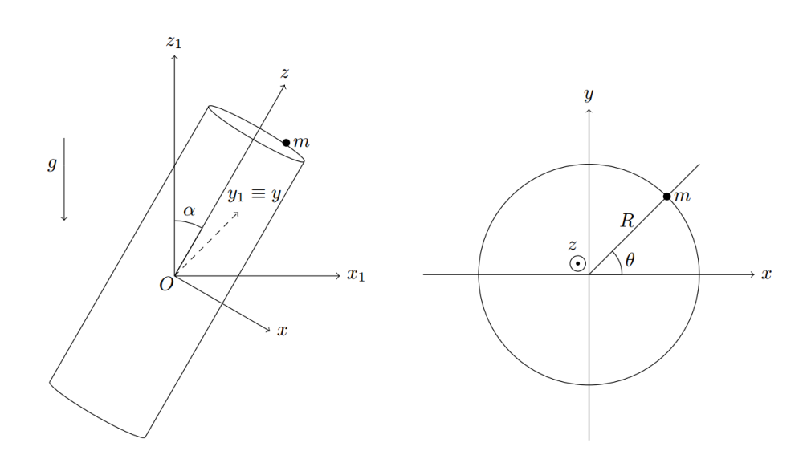
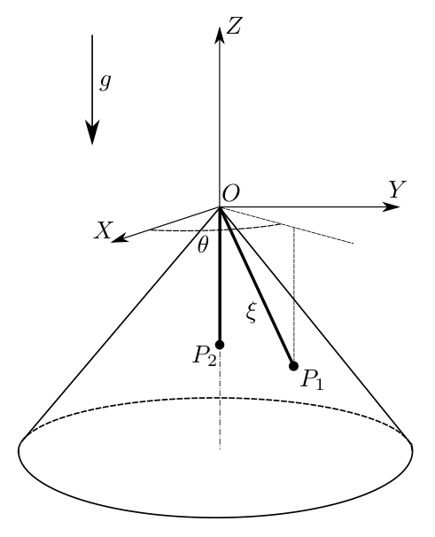
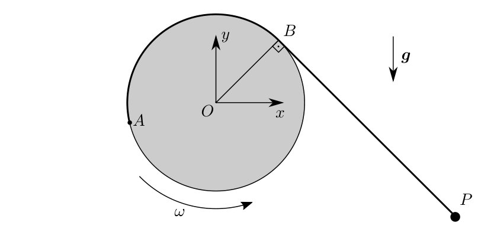
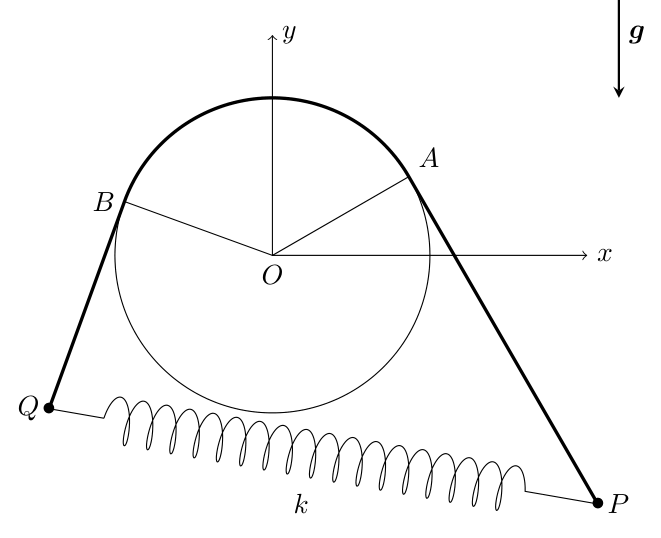
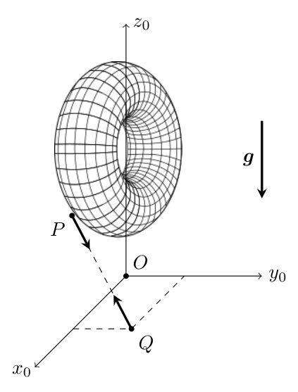
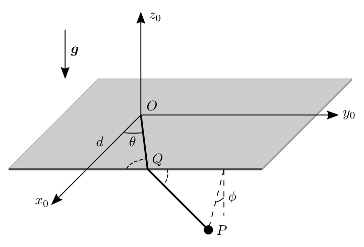
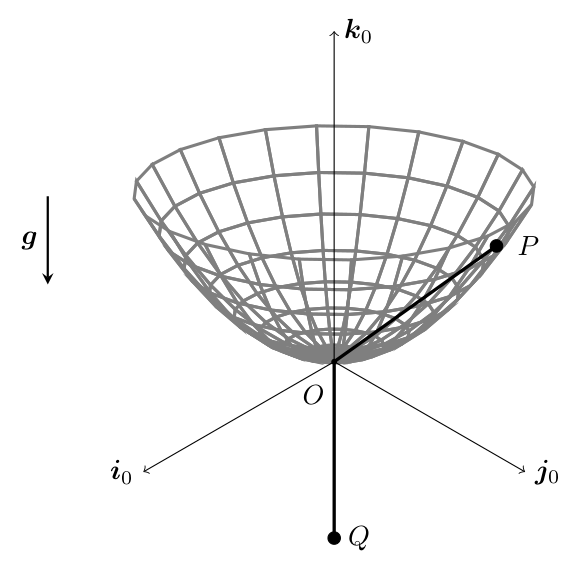
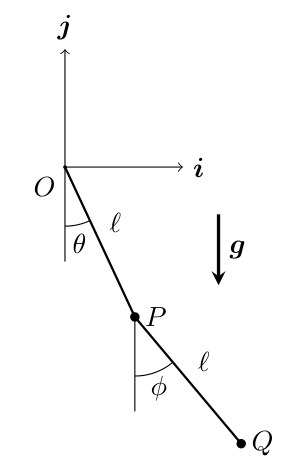

Topic 3: Constraints and Reaction Forces - Problem Sets
A heavy particle of mass $m$ is moving without friction on a cone which is described as:
The frame of reference $Oxyz$ is inertial and $Oz$ is the ascending vertical. The initial coordinates of the particle are $(a, 0, a)$ and its velocity is $\sqrt{ag}\,\mathbf{j}$. Reduce the problem to integral equations and determine the maximum and minimum value of $z$ along the motion.
Full Analytical Solution (4-Phase Methodology) [ Click to Expand ]
Physical Statement, Hypotheses & Parameters
- Physical System: A point particle of mass $m$ moves without friction on the interior surface of an inverted cone given by $z^2 = x^2 + y^2$ with $z > 0$.
- Configuration Degrees of Freedom (CDOFs):
- Ambient space: 3 Cartesian coordinates $(x, y, z)$.
- Holonomic geometric constraint: $\Phi(x, y, z) = x^2 + y^2 - z^2 = 0$.
- Number of CDOFs: $3 - 1 = 2$. We choose cylindrical coordinates $(r, \theta)$ with $z = r$.
- Hypotheses:
1. Constraint is smooth (frictionless): the reaction force $\mathbf{N}$ is strictly orthogonal to the tangent space of the cone ($W_{\mathbf{N}} = 0$).
2. Inertial frame with gravity acting along $-Oz$: $\mathbf{g} = -g\mathbf{k}$.
- Initial State ($t = 0$):
- Position: $(x_0, y_0, z_0) = (a, 0, a) \implies r(0) = a, \theta(0) = 0, z(0) = a$.
- Velocity: $\mathbf{v}_0 = \sqrt{ag}\,\mathbf{j} \implies v_r(0) = 0, v_\theta(0) = r(0)\dot{\theta}(0) = \sqrt{ag}, v_z(0) = 0$.
- Parameters: $m > 0$ [kg], $g > 0$ [m/s$^2$], $a > 0$ [m].
Reference Frames, Vector Bases & Coordinate Geometry
- Inertial Reference Frame: $\mathcal{F}_0 = \{O; \mathbf{i}, \mathbf{j}, \mathbf{k}\}$.
- Cylindrical Vector Basis: $\mathcal{B}_1 = \{\mathbf{e}_r, \mathbf{e}_\theta, \mathbf{k}\}$, with:
- Kinematics with Constraint $z(t) = r(t)$:
- Position: $\mathbf{r}(t) = r\mathbf{e}_r + r\mathbf{k}$.
- Velocity: Differentiating with respect to time using Poisson's rule $\dot{\mathbf{e}}_r = \dot{\theta}\mathbf{e}_\theta$:
- Modulus of velocity squared:
- Change of basis (cylindrical basis). $\mathcal{B}_1 = \{\mathbf{e}_r, \mathbf{e}_\theta, \mathbf{k}\}$ is the inertial basis $\mathcal{B}_0 = \{\mathbf{i}, \mathbf{j}, \mathbf{k}\}$ rotated by $\theta(t)$ about $\mathbf{k}$; the columns are the components of $\mathbf{e}_r$, $\mathbf{e}_\theta$, $\mathbf{k}$ in $\mathcal{B}_0$:
- The angular velocity of $\mathcal{B}_1$ is $\boldsymbol{\omega}_{10} = \dot{\theta}\,\mathbf{k}$, so Poisson's formula gives $\dot{\mathbf{e}}_r = \dot{\theta}\,\mathbf{e}_\theta$ and $\dot{\mathbf{e}}_\theta = -\dot{\theta}\,\mathbf{e}_r$, as used above.
- Surface-adapted basis. On the cone $z = r$ (slope $45^\circ$) the unit generator is $\mathbf{e}_g = (\mathbf{e}_r + \mathbf{k})/\sqrt{2}$ and the unit normal pointing into the cone, where the particle lies, is $\mathbf{n}_{in} = (\mathbf{k} - \mathbf{e}_r)/\sqrt{2}$. The triple $\{\mathbf{e}_g, \mathbf{e}_\theta, \mathbf{n}_{in}\}$ is right-handed ($\mathbf{e}_g \times \mathbf{e}_\theta = \mathbf{n}_{in}$) and its components in $\mathcal{B}_1$ are the columns of
- Both matrices were checked symbolically with sympy.
Step-by-Step Mathematical Deduction
1. First Integral from the $\mathbf{e}_\theta$ Component of Newton's Law
Evaluate $C_z$ at $t = 0$:
Therefore:
2. Conservation of Mechanical Energy
Initial energy at $t = 0$:
Energy at any subsequent time:
Substitute $\dot{\theta} = \frac{a\sqrt{ga}}{r^2}$:
Divide through by $m$:
3. Reduction to Quadratures (Integral Equation)
Isolate $\dot{r}^2$:
Taking the square root:
Separating variables yields the integral equation:
4. Determination of Maximum and Minimum of $z$ ($r$)
Rewrite $P(r) = 0$:
Since the particle starts at $r = a$, $r = a$ must be a root:
Divide $2r^3 - 3ar^2 + a^3$ by $(r - a)$:
Factor the quadratic factor:
Therefore, the polynomial factors completely as:
Substituting back into the expression for $\dot{r}^2$:
Since $r > 0$ and $a > 0$, the factor $(2r + a) > 0$.
The square $(r - a)^2 \ge 0$, which implies:
Because $\dot{r}^2$ is a squared real quantity, it must satisfy $\dot{r}^2 \ge 0$.
The only physically possible solution for all time is:
Physical Interpretation & Dimensional Verification
- Steady Circular Orbit: The particle is placed exactly at the minimum of the effective potential $V_{eff}(r) = mgr + \frac{m a^3 g}{2r^2}$. The initial tangential velocity $v_0 = \sqrt{ag}$ provides precisely the centripetal acceleration required to balance the inward horizontal component of the normal reaction force $\mathbf{N}$.
- Extremal Heights:
The particle maintains a constant altitude $z = a$ for all time, executing uniform circular motion with orbital frequency $\omega = \dot{\theta} = \sqrt{g/a}$.
- Dimensional check: $[C_z] = [m\,a\sqrt{ga}] = \text{kg}\cdot\text{m}^2\cdot\text{s}^{-1}$ (the constant $C_z = m r^2\dot\theta$); $[\dot{r}^2] = \text{m}^2/\text{s}^2$ and $[g\,a^3/r^2] = (\text{m/s}^2)\,\text{m} = \text{m}^2/\text{s}^2$, so every term of the energy equation has the same units.
- Reaction on the steady orbit (sympy force balance): with $\dot{\theta}^2 = g/a$ the horizontal acceleration is $-g\,\mathbf{e}_r$. Requiring $N\,\mathbf{n}_{in} - mg\,\mathbf{k} = -mg\,\mathbf{e}_r$ gives $\mathbf{N} = mg(\mathbf{k} - \mathbf{e}_r) = \sqrt{2}\,mg\,\mathbf{n}_{in}$, so $\|\mathbf{N}\| = \sqrt{2}\,mg$ [N], pointing into the cone, which is physically admissible (it presses the particle against the surface).
- Stability (small radial oscillations): the effective inertia of the $r$-motion is $2m$ (the kinetic energy has $2\dot{r}^2$) and $V_{eff}''(a) = 3mg/a$, hence $\omega_r^2 = 3g/(2a)$. An RK4 integration (step $10^{-4}$, $g = a = 1$) of $2\ddot{r} = r\dot{\theta}^2 - g$ with $r(0) = 1.001$, $\dot{r}(0) = 0$ and $r^2\dot{\theta} = a\sqrt{ga}$ has period $5.1304$ against $2\pi/\sqrt{3/2} = 5.1302$ (in units of $\sqrt{a/g}$), confirming that the circular orbit is a stable minimum of $V_{eff}$.
A heavy particle of mass $m$ is moving without friction on the paraboloid which is described as:
where $a$ is a positive constant and $r$ is the distance to the $Oz$ vertical axis. If $r = a$ initially, and the particle is released with a velocity $v_0$ tangent to the local parallel, reduce the problem to integrals of the form $\int [...] dr = \int [...] dt$. Determine the maximum and minimum of $r$ along the motion.
Full Analytical Solution (4-Phase Methodology) [ Click to Expand ]
Physical Statement, Hypotheses & Parameters
- Physical System: A particle of mass $m$ moves without friction on the paraboloid of revolution $a z = r^2$, where $a > 0$ and $r = \sqrt{x^2 + y^2}$.
- Degrees of Freedom: $3$ coordinates minus $1$ constraint $\implies 2$ CDOFs. We parametrize using cylindrical coordinates $(r, \theta)$ with $z = r^2/a$.
- Initial State ($t = 0$):
- Radius: $r(0) = a \implies z(0) = a^2/a = a$.
- Velocity: Launched tangent to the local parallel (pure azimuthal velocity):
- Parameters: $m > 0$ [kg], $a > 0$ [m], $g > 0$ [m/s$^2$], $v_0 > 0$ [m/s].
Reference Frames, Vector Bases & Coordinate Geometry
- Inertial Frame: $\mathcal{F}_0 = \{O; \mathbf{i}, \mathbf{j}, \mathbf{k}\}$.
- Kinematics with $z = r^2/a$:
Velocity vector:
Velocity squared:
- Change of basis (cylindrical basis). $\mathcal{B}_1 = \{\mathbf{e}_r, \mathbf{e}_\theta, \mathbf{k}\}$ is obtained from $\mathcal{B}_0 = \{\mathbf{i}, \mathbf{j}, \mathbf{k}\}$ by a rotation $\theta(t)$ about $\mathbf{k}$:
- Surface-adapted basis. With $s = \sqrt{1 + 4r^2/a^2}$, the unit tangent along the meridian is $\mathbf{e}_g = (\mathbf{e}_r + \tfrac{2r}{a}\mathbf{k})/s$ and the unit normal pointing into the bowl is $\mathbf{n}_{in} = (\mathbf{k} - \tfrac{2r}{a}\mathbf{e}_r)/s$, proportional to $-\boldsymbol{\nabla}f$ of Phase 3. Since $\mathbf{e}_g \times \mathbf{e}_\theta = \mathbf{n}_{in}$ the triple is right-handed, and
- The determinants and products $R R^T$ were verified symbolically with sympy.
Step-by-Step Mathematical Deduction
1. First Integral from the $\mathbf{e}_\theta$ Component of Newton's Law
2. Conservation of Mechanical Energy
Initial energy:
Energy at time $t$:
Multiply by $\frac{2}{m}$:
Grouping terms:
Compare with the quadrature formula in the official solution key (Problems.pdf, Solution keys section).
3. Reduction to Quadratures
Isolating $\dot{r}$:
Taking the square root and separating variables:
4. Determination of Maximum and Minimum of $r$
Setting $\dot{r} = 0$:
Multiply by $a r^2$:
Let $u = r^2$. The quadratic in $u$ is:
Since $r = a \implies u = a^2$ must be a root:
Factorizing $(u - a^2)$:
The two roots for $u = r^2$ are:
Physical Interpretation & Dimensional Verification
- Case 1: $v_0 < \sqrt{2ga}$
$r_2 = v_0\sqrt{\frac{a}{2g}} < a$.
The particle falls inwards towards the vertex, reaches $r_{min}$, and climbs back to $a$.
- Case 2: $v_0 = \sqrt{2ga}$
$r_2 = a$. Both roots coincide:
The particle moves on a horizontal circular orbit of constant radius $r = a$.
- Case 3: $v_0 > \sqrt{2ga}$
$r_2 = v_0\sqrt{\frac{a}{2g}} > a$.
The particle climbs up the paraboloid to $r_{max}$, then falls back to $a$.
- Compare with the official solution key (Problems.pdf, Solution keys section).
- Dimensional check: $[v_0^2 + 2ga] = \text{m}^2/\text{s}^2$, $[a^2v_0^2/r^2] = \text{m}^2/\text{s}^2$ and $[2gr^2/a] = \text{m}^2/\text{s}^2$; the roots $r_2 = v_0\sqrt{a/(2g)}$ have units $(\text{m/s})\sqrt{\text{m}/(\text{m/s}^2)} = \text{m}$.
- Circular orbit (Case 2): for $v_0^2 = 2ga$ the quadratic of Phase 3 becomes $2g\,u^2 - 4ga^2u + 2ga^4 = 2g\,(u - a^2)^2$, a double root at $u = a^2$, so $\dot{r} \equiv 0$. This agrees with the circular-orbit condition $v^2 = g\,r\tan\gamma$ with $\tan\gamma = dz/dr = 2r/a = 2$ at $r = a$.
- Limit $v_0 \to 0$: $r_{min} = v_0\sqrt{a/(2g)} \to 0$, the particle drops to the vertex, as expected for a body released at rest.
- Numerical check ($g = a = v_0 = 1$, case 1): the turning points are the roots of $v_0^2 + 2ga - a^2v_0^2/r^2 - 2gr^2/a = 0$; bisection gives $r_{min} = 0.707107$ against $v_0\sqrt{a/(2g)} = 0.707107$, and $r_{max} = a = 1$.
A simple pendulum consists of a mass $m$ hanging from a string of length $L$ and fixed at a pivot point $O$. The simple pendulum is equivalent to the problem of a heavy particle constrained to move along a smooth circumference. A unilateral constraint is considered, such that the particle moves along the interior of the circumference and it might fall under certain conditions.
Analyze the motion of the particle when it is pushed from the lowest point of the circumference with velocity $v_0$. At what point does the particle leave the circumference? Is this point ever reached?
If the circumference rotates around the vertical axis with a constant angular velocity equal to $\omega$, write down the new equations of motion. Compute the locations along the circumference in which the particle is in equilibrium.
Full Analytical Solution (4-Phase Methodology) [ Click to Expand ]
Physical Statement, Hypotheses & Parameters
- Physical System: A particle of mass $m$ is suspended by a string of length $L$ from pivot $O$, or equivalently moves along the smooth interior of a vertical circular track of radius $L$.
- Unilateral Constraint: The particle cannot cross the circular boundary outward, but may detach if the inward contact force drops to zero ($N = 0$, or string slack $T = 0$).
- Initial Motion: Pushed from the lowest point ($\theta = 0$) with velocity $v_0$.
- Part (b) Modification: The circular track rotates about its vertical diameter with constant angular velocity $\omega$ (a rheonomic constraint, solved in the inertial frame).
- Parameters: $m > 0$ [kg], $L > 0$ [m], $g > 0$ [m/s$^2$], $v_0 > 0$ [m/s], $\omega \ge 0$ [rad/s].
Reference Frames, Vector Bases & Coordinate Geometry
- Inertial Frame $\mathcal{F}_0 = \{O; \mathbf{i}, \mathbf{j}, \mathbf{k}\}$: $Oz$ points vertically upward ($-\mathbf{k}$ is downward).
- Polar Coordinate Basis $\mathcal{B}_1 = \{\mathbf{e}_r, \mathbf{e}_\theta, \mathbf{j}\}$:
Angle $\theta$ measured from the downward vertical ($-\mathbf{k}$):
- Kinematics:
- Position: $\mathbf{r} = L\mathbf{e}_r$.
- Velocity: $\mathbf{v} = L\dot{\theta}\mathbf{e}_\theta$.
- Acceleration: $\mathbf{a} = -L\dot{\theta}^2\mathbf{e}_r + L\ddot{\theta}\mathbf{e}_\theta$.
- Change of basis. The triple $\{\mathbf{e}_r, \mathbf{e}_\theta, \mathbf{j}\}$ listed above has $\mathbf{e}_r \times \mathbf{e}_\theta = -\mathbf{j}$, so it is left-handed (determinant $-1$); the right-handed polar triple is $\{\mathbf{e}_r, \mathbf{e}_\theta, \mathbf{e}_3\}$ with $\mathbf{e}_3 = -\mathbf{j}$ (the third vector plays no role in the planar kinematics). The columns are the components in $\mathcal{B}_0 = \{\mathbf{i}, \mathbf{j}, \mathbf{k}\}$:
- The angular velocity of $\mathcal{B}_1$ is $\boldsymbol{\omega}_{10} = \dot{\theta}\,\mathbf{e}_3 = -\dot{\theta}\,\mathbf{j}$, and Poisson's formula gives $\dot{\mathbf{e}}_r = \dot{\theta}\,\mathbf{e}_\theta$, $\dot{\mathbf{e}}_\theta = -\dot{\theta}\,\mathbf{e}_r$, the identities behind $\mathbf{v} = L\dot{\theta}\,\mathbf{e}_\theta$ and $\mathbf{a} = -L\dot{\theta}^2\mathbf{e}_r + L\ddot{\theta}\,\mathbf{e}_\theta$.
- For part (b) the cylindrical basis $\{\mathbf{e}_\rho, \mathbf{e}_\varphi, \mathbf{k}\}$ is obtained from $\mathcal{B}_0$ by the simple rotation $\mathrm{R}_z(\omega t)$ about $\mathbf{k}$ (a rotation matrix with $\det = 1$, $R R^T = I$), and inside the meridian plane the pair $\{\mathbf{e}_r, \mathbf{e}_\theta\}$ is written with $\mathbf{e}_\rho$ in place of $\mathbf{i}$. The determinant and the product $R R^T$ were verified symbolically with sympy.
Step-by-Step Mathematical Deduction
Part (a): Planar Motion & Detachment Analysis
1. Mechanical Energy Conservation
Taking the lowest point $\theta = 0$ as the gravitational potential reference ($V(0) = 0$):
Isolate $v^2(\theta)$:
2. Normal Reaction Force $N(\theta)$
The forces acting on the particle are gravity $\mathbf{F}_g = -mg\mathbf{k}$ and track reaction $\mathbf{N} = -N\mathbf{e}_r$ ($N > 0$ pushes inward):
Projecting Newton's second law along the inward normal $-\mathbf{e}_r$:
Substitute the energy relation for $v^2(\theta)$:
Expand and combine terms:
3. Detachment Condition ($N = 0$)
The particle leaves the circumference if $N$ drops to zero while $v > 0$:
4. Motion Regimes and Question Resolution: "Is this point ever reached?"
- Regime 1: $v_0 \le \sqrt{2gL}$ (Low energy, oscillation in lower semicircle)
Velocity reaches zero when $v^2 = 0$:
At this maximum angle, the reaction force is:
The particle comes to rest and reverses direction before $N$ can vanish.
Conclusion: The detachment point is never reached. The particle oscillates periodically in the lower semicircle.
- Regime 2: $\sqrt{2gL} < v_0 < \sqrt{5gL}$ (Intermediate energy, detachment occurs)
Since $v_0^2 > 2gL$, the particle crosses the horizontal position $\theta = \pi/2$ with positive velocity.
In the upper semicircle ($\pi/2 < \theta < \pi$), $\cos\theta < 0$.
Evaluate the detachment angle $\cos\theta_d$:
Because $2gL < v_0^2 < 5gL$:
So $\cos\theta_d \in (-1, 0)$, meaning $\theta_d \in (\pi/2, \pi)$ is physically accessible!
At this point, the speed is:
Conclusion: The detachment point is reached. The particle leaves the circular track at angle $\theta_d = \arccos\left(\frac{2gL - v_0^2}{3gL}\right)$ and transitions into free parabolic flight under gravity alone.
- Regime 3: $v_0 \ge \sqrt{5gL}$ (High energy, complete vertical loops)
At the very top of the circle ($\theta = \pi, \cos\pi = -1$):
The reaction force remains positive throughout the entire loop.
Conclusion: The particle never leaves the circumference and performs complete revolutions.
Part (b): Rotating Circumference with Angular Velocity $\omega$
1. Equations of Motion in the Inertial Frame (rheonomic constraint)
Position of the particle, with $\rho = L\sin\theta$ and $z = -L\cos\theta$ on the circle and $\dot\varphi = \omega$ constant:
Cylindrical acceleration with $\ddot\varphi = 0$ (Notes Sec. 2.6.2):
Differentiate $\rho$ and $z$ with the chain rule, $\frac{d}{dt}f(\theta(t)) = f'(\theta)\dot\theta$:
Forces: gravity $\mathbf{F}_g = -mg\,\mathbf{k}$ and the reaction $\mathbf{N} = N_r\,\mathbf{e}_r + N_\varphi\,\mathbf{e}_\varphi$ of the smooth wire. $\mathbf{N}$ is orthogonal to the tangent vector of the circle, $\mathbf{e}_\theta = \cos\theta\,\mathbf{e}_\rho + \sin\theta\,\mathbf{k}$, which lies in the meridian plane, so $\mathbf{N}\cdot\mathbf{e}_\theta = 0$. Projecting Newton's second law on $\mathbf{e}_\theta$ removes the reaction:
Compute $\mathbf{a}\cdot\mathbf{e}_\theta = (\ddot\rho - \rho\omega^2)\cos\theta + \ddot z\sin\theta$ term by term:
Therefore:
The component of $\mathbf{N}$ along $\mathbf{e}_\varphi$ is the force that makes the particle follow the turning plane: $N_\varphi = 2m\dot\rho\,\omega = 2mL\omega\dot\theta\cos\theta$. The in-plane component $N_r$ follows from the $\mathbf{e}_r$ projection and is not needed here.
2. Computation of Equilibrium Locations
Setting the angular acceleration to zero:
This equation is satisfied if either factor vanishes:
1. Vertical Alignments ($\sin\theta = 0$):
2. Off-Axis Equilibrium ($\cos\theta = \frac{g}{\omega^2 L}$):
This solution exists physically if and only if:
When $\omega > \sqrt{\frac{g}{L}}$, two symmetric equilibrium positions emerge:
Physical Interpretation & Dimensional Verification
- Supercritical Pitchfork Bifurcation:
- For slow rotation $\omega < \omega_c = \sqrt{g/L}$, the bottom $\theta = 0$ is the only stable equilibrium.
- When the rotation rate crosses the critical threshold $\omega_c$, the bottom becomes unstable, and the particle naturally climbs up the wire to settle at the tilted angle $\theta_0 = \arccos\left(\frac{g}{\omega^2 L}\right)$, where the horizontal circle of radius $L\sin\theta$ has exactly the centripetal acceleration that the vertical balance with gravity requires.
- As $\omega \to \infty$, $\cos\theta_0 \to 0 \implies \theta_0 \to \pi/2$ (the particle moves toward the equator).
- Dimensional check: $[N] = [mv_0^2/L] = \text{kg}\cdot\text{m}\cdot\text{s}^{-2} = \text{N}$; $\cos\theta_d = (2gL - v_0^2)/(3gL)$ is dimensionless; $\omega_c = \sqrt{g/L}$ has units $\text{s}^{-1}$.
- Limits of the regimes: at $v_0^2 = 2gL$, $\cos\theta_d = 0$ ($\theta_d = \pi/2$), the boundary between oscillation and detachment; at $v_0^2 = 5gL$, $\cos\theta_d = -1$ ($\theta_d = \pi$) and $N(\pi) = 0$, the boundary between detachment and full loops. For $\omega \to 0$ in part (b) the equation reduces to the simple pendulum $\ddot{\theta} + (g/L)\sin\theta = 0$.
- Numerical example ($g = L = 1$, $v_0^2 = 3.5$, regime 2): $\cos\theta_d = (2 - 3.5)/3 = -0.5$, $\theta_d = 120^\circ$; $v^2(\theta_d) = (v_0^2 - 2gL)/3 = 0.5$ and $N(\theta_d) = v_0^2/L - g(2 - 3\cos\theta_d) = 3.5 - 3.5 = 0$, as required.
A heavy particle $P$ is constrained to move along a circumference and it is attached to a spring as shown in the figure. The mass of the particle is $m$, and the radius of the circumference is $a$. The other end of the spring is attached to a point of the $y$ axis with coordinates $(0, \beta a)$ and the constant of the spring is equal to $k$.

-
(a)
Compute the potential of the forces acting on the particle as a function of the angle $\theta$ (shown in the figure).
-
(b)
Identify the equilibrium positions.
The particle departs from the point $(a, 0)$ of the circumference with an initial velocity $\mathbf{v}_0 = v_0\mathbf{j}$.
-
(c)
Reduce the motion to integrals (i.e., quadratures).
-
(d)
If $\beta = \frac{mg}{ka}$, obtain the position of the particle as a function of time.
Viscous Damping Case:
Consider now the situation in which an additional force acts on the particle. The force is proportional to, and in the same direction as, the instantaneous velocity. The constant of proportionality is $2m\mu$. The initial conditions are the same as before.
-
(e)
Obtain the position of the particle as a function of time.
-
(f)
Obtain the reaction of the circumference.
Full Analytical Solution (4-Phase Methodology) [ Click to Expand ]
Physical Statement, Hypotheses & Parameters
- Physical System: A particle of mass $m$ slides along a vertical circular wire of radius $a$ centered at $O$. A linear spring of stiffness $k$ and zero natural length connects the particle $P$ to anchor point $A(0, \beta a)$ on the vertical axis.
- CDOFs: 1 degree of freedom, angle $\theta$ measured counterclockwise from the positive $x$-axis.
- Forces:
1. Gravity: $-mg\mathbf{j}$.
2. Spring force: $\mathbf{F}_s = -k\mathbf{AP}$.
3. Constraint reaction $\mathbf{N}$ normal to the wire.
- Initial State ($t = 0$): Released from $(a, 0) \implies \theta(0) = 0$ with $\mathbf{v}_0 = v_0\mathbf{j} \implies \dot{\theta}(0) = v_0/a$.
- Parameters: $m, a, k, g, \beta, v_0 > 0$.
Reference Frames, Vector Bases & Coordinate Geometry
- Position of anchor $A$: $\mathbf{r}_A = \beta a\mathbf{j}$.
- Position of particle $P$: $\mathbf{r}_P = a\cos\theta\,\mathbf{i} + a\sin\theta\,\mathbf{j}$.
- Spring elongation vector:
- Length squared of spring:
Step-by-Step Mathematical Deduction
Part (a): Total Potential Energy Function $V(\theta)$
Summing both contributions:
Part (b): Identification of Equilibrium Positions
Equilibrium requires $\frac{dV}{d\theta} = 0$:
Two cases emerge:
1. If $mg - k\beta a \neq 0$: $\cos\theta = 0 \implies \theta_1 = \frac{\pi}{2}$ (top) and $\theta_2 = -\frac{\pi}{2}$ (bottom).
2. If $\beta = \frac{mg}{ka}$: $\frac{dV}{d\theta} \equiv 0$ for all $\theta$. Every point along the circumference is an equilibrium position (neutral equilibrium)!
Part (c): Reduction of Motion to Quadratures
Conservation of mechanical energy:
Part (d): Case $\beta = \frac{mg}{ka}$
When $\beta = \frac{mg}{ka}$, the coefficient $(mg - k\beta a) = 0$.
The potential energy is strictly constant: $V(\theta) = \text{constant}$.
The equation of motion reduces to:
Integrating with $\theta(0) = 0$:
The particle circles the wire with strictly uniform angular speed!
Part (e): Viscous Damping Case (Damping force $\mathbf{F}_d = -2m\mu\mathbf{v}$)
With $\beta = \frac{mg}{ka}$, the tangential equation of motion is:
Divide by $ma$:
Let $\omega(t) = \dot{\theta}(t)$:
Integrate for position $\theta(t) = \int_0^t \omega(t')dt'$ with $\theta(0) = 0$:
Part (f): Reaction of the Circumference
Radial Newton's second law, with $N$ the component of the reaction along $+\mathbf{e}_r$ (outward), $\mathbf{F}_g \cdot \mathbf{e}_r = -mg\sin\theta$ and $\mathbf{F}_s \cdot \mathbf{e}_r = -ka(1 - \beta\sin\theta)$:
Substitute $\beta = \frac{mg}{ka}$:
Physical Interpretation & Dimensional Verification
- As $t \to \infty$, the particle comes to rest asymptotically at $\theta_\infty = \frac{v_0}{2\mu a}$, and the reaction force approaches the static spring preload $ka$.
A heavy particle of mass $m$ is constrained to move without friction along the surface of an infinitely-long, circular cylinder of radius $R$. The cylinder axis ($Oz$) forms an angle $\alpha$ with the vertical direction ($Oz_1$). The position of the particle is completely specified by providing the coordinate $z$ along the axis $Oz$ and the angle $\theta$. Initially, the particle is located at $z = 0, \theta = \pi/2$ and the time derivatives are $\dot{z} = v_0$ and $\dot{\theta} = \omega_0$.

-
(a)
Determine the value of $z$ as a function of time, $z(t)$.
-
(b)
Reduce the determination of the angle $\theta(t)$ to integrals of the form $\int [...] d\theta = \int [...] dt$.
-
(c)
Determine the reaction from the cylinder as a function of $\theta$.
-
(d)
For the particular case $\omega_0^2 = \frac{g\sin\alpha}{R}$, describe qualitatively the motion of the particle.
-
(e)
For the particular case $\omega_0^2 = \frac{4g\sin\alpha}{R}$, describe qualitatively the motion of the particle.
Full Analytical Solution (4-Phase Methodology) [ Click to Expand ]
Physical Statement, Hypotheses & Parameters
- Physical System: A particle of mass $m$ moves without friction on an infinitely long circular cylinder of radius $R$ whose axis $Oz$ forms an angle $\alpha$ with the vertical.
- CDOFs: 2 degrees of freedom: axial coordinate $z(t)$ and azimuthal angle $\theta(t)$.
- Initial State ($t = 0$): $z(0) = 0, \theta(0) = \pi/2$, with $\dot{z}(0) = v_0$ and $\dot{\theta}(0) = \omega_0$.
- Parameters: $m, R, \alpha, g, v_0, \omega_0$.
Reference Frames, Vector Bases & Coordinate Geometry
- Cylindrical basis on cylinder: $\mathbf{e}_r, \mathbf{e}_\theta, \mathbf{k}$.
- Gravity vector decomposed along cylinder axes:
- Axial component along $-Oz$: $g_z = -g\cos\alpha$.
- Transverse horizontal/vertical component in cross-section: $g_\perp = g\sin\alpha$.
From the figure, $\mathbf{z} = \sin\alpha\,\mathbf{i}_1 + \cos\alpha\,\mathbf{k}_1$ and $\mathbf{x} = \cos\alpha\,\mathbf{i}_1 - \sin\alpha\,\mathbf{k}_1$, so $-g\mathbf{k}_1 = g\sin\alpha\,\mathbf{x} - g\cos\alpha\,\mathbf{z}$: $\theta = 0$ is the lowest generator of the cylinder.
Step-by-Step Mathematical Deduction
Part (a): Axial Motion $z(t)$
Integrate once with $\dot{z}(0) = v_0$:
Integrate for position with $z(0) = 0$:
Part (b): Angular Evolution $\theta(t)$ Reduced to Quadratures
Azimuthal equation:
Multiply by $\dot{\theta}$ and integrate:
At $t = 0$, $\theta = \pi/2 \implies \cos(\pi/2) = 0$, $\dot{\theta}(0) = \omega_0$:
Separation of variables:
Part (c): Normal Reaction Force $N(\theta)$
Radial equation along $-\mathbf{e}_r$ ($N$ is the inward reaction; gravity has component $+mg\sin\alpha\cos\theta$ along $+\mathbf{e}_r$, hence $-mg\sin\alpha\cos\theta$ along $-\mathbf{e}_r$):
Part (d): Case $\omega_0^2 = \frac{g\sin\alpha}{R}$
Turning point occurs when $\dot{\theta} = 0 \implies \cos\theta = -1/2 \implies \theta = \pm\frac{2\pi}{3}$.
The particle undergoes bounded angular oscillations between $-2\pi/3$ and $+2\pi/3$ about the bottom generator $\theta = 0$ (for $\omega_0 > 0$ it first reaches $2\pi/3$, then swings through $\theta = 0$ to $-2\pi/3$ and back) while accelerating parabolically along the axis $Oz$.
Part (e): Case $\omega_0^2 = \frac{4g\sin\alpha}{R}$
At the top of the cylinder ($\theta = \pi, \cos\pi = -1$):
The angular velocity never vanishes. The particle performs complete revolutions (helical trajectory with growing pitch) around the cylinder.
Physical Interpretation & Dimensional Verification
- Complete decoupling between 1D uniform acceleration along $z$ and nonlinear pendulum dynamics in $\theta$.
Two heavy point particles $P_1$ and $P_2$ of mass $m$ each are connected by an inextensible, massless string of total length $\ell$. Particle $P_1$ is constrained to move without friction over the surface of a cone of semiangle $\alpha$ (the particle cannot leave the surface of the cone). The string passes through an aperture at the cone vertex $O$, and it can slide through it without friction. Particle $P_2$ hangs along the cone axis, and is constrained to move along it. We define an inertial reference frame $S_0$. We call $\xi$ the length of the fraction of string between $O$ and $P_1$, and $\theta$ the angle formed between the $Ox$ axis and the projection onto the $Oxy$ plane of the $\mathbf{OP}_1$ vector. In the following, assume that the string is always tense and that the particles do not reach point $O$ during motion.

-
(a)
Write down the general expression of the position, velocity, and acceleration vectors of $P_1$ and $P_2$ as a function of $\theta, \xi$ and the parameters of the problem.
-
(b)
Write down the expression of all forces that act on $P_1$ and $P_2$.
-
(c)
Write down the differential equations that, if solved, would yield the time evolution of $\theta, \xi$, the tension on the string, and any other reaction force in the problem.
-
(d)
What is the mathematical condition that the function $\xi(t)$ must satisfy for the string to remain tense all the time?
-
(e)
How fast should $P_1$ rotate in the $\theta$ direction to have a circular trajectory over a cone parallel? What is the value of the string tension and any other reaction force in the problem in that case? Give your answer as a function of $\xi$ and the parameters of the problem.
-
(f)
Taking these equations as the starting point (or based on the physical considerations of the problem) write down two first-integrals of the problem that do not depend on the string tension or any other reaction force in the problem.
Full Analytical Solution (4-Phase Methodology) [ Click to Expand ]
Physical Statement, Hypotheses & Parameters
- Physical System: Two heavy particles $P_1$ and $P_2$, each of mass $m$, connected by an inextensible massless string of length $\ell$.
- $P_1$ is constrained to the frictionless surface of a cone of semi-angle $\alpha$ with vertex at $O$.
- $P_2$ hangs vertically along the cone's axis of symmetry ($Oz$).
- The string passes through a frictionless hole at vertex $O$.
- Configuration Degrees of Freedom (CDOFs):
- Ambient coordinates: 6.
- Constraints: $P_1$ on cone (1), string inextensibility $\xi_1 + \xi_2 = \ell$ (1), $P_2$ on axis $Oz$ (2).
- Total CDOFs: $6 - 4 = 2$.
- Generalized coordinates: $\xi(t)$ (distance $OP_1$) and azimuthal angle $\theta(t)$.
- Hypotheses: String is always taut ($T(t) > 0$), frictionless hole and cone surface.
- Parameters: $m, \ell, \alpha, g > 0$.
Reference Frames, Vector Bases & Coordinate Geometry
- Cylindrical frame on the cone:
- Unit vector along cone generator from $O$ to $P_1$:
- Unit tangent along parallel: $\mathbf{e}_\theta = -\sin\theta\,\mathbf{i} + \cos\theta\,\mathbf{j}$.
- Unit outward normal to the cone:
- Position of $P_1$:
- Position of $P_2$ (hanging at distance $\ell - \xi$ below $O$):
Step-by-Step Mathematical Deduction
Part (a): Kinematics of $P_1$ and $P_2$
1. For $P_1$:
Velocity:
Acceleration:
2. For $P_2$:
Part (b): Forces on $P_1$ and $P_2$
1. On $P_1$:
- Gravity: $\mathbf{F}_{g1} = -mg\mathbf{k} = mg\cos\alpha\mathbf{e}_\xi - mg\sin\alpha\mathbf{n}$.
- String tension: $\mathbf{T}_1 = -T\mathbf{e}_\xi$ ($T > 0$).
- Normal cone reaction: $\mathbf{N} = N\mathbf{n}$.
2. On $P_2$:
- Gravity: $\mathbf{F}_{g2} = -mg\mathbf{k}$.
- String tension: $\mathbf{T}_2 = +T\mathbf{k}$.
- Guide reaction: $\mathbf{R}_2 \perp \mathbf{k}$.
Part (c): Equations of Motion
1. $P_2$ along $\mathbf{k}$:
2. $P_1$ along generator $\mathbf{e}_\xi$:
Substitute $T = m(g + \ddot{\xi})$:
3. $P_1$ along parallel $\mathbf{e}_\theta$:
4. $P_1$ along normal $\mathbf{n}$:
Part (d): Condition for String to Remain Taut
For the string to remain in tension ($T > 0$):
Part (e): Circular Trajectory on a Parallel
For a steady circular trajectory: $\xi = \text{constant} \implies \dot{\xi} = 0, \ddot{\xi} = 0$.
The radial equation gives:
Values of Tension and Normal Force:
Part (f): Two First Integrals of Motion
1. Azimuthal First Integral (cyclic coordinate $\theta$):
With $\rho = \xi\sin\alpha$ the distance of $P_1$ to the axis, $a_\theta = \frac{1}{\rho}\frac{d}{dt}(\rho^2\dot{\theta})$. Gravity, the tension (directed to $O$) and the cone reaction all lie in the meridian plane of $P_1$, so the $\mathbf{e}_\theta$ equation reads $\frac{d}{dt}(\xi^2\sin^2\alpha\,\dot{\theta}) = 0$:
2. Mechanical Energy First Integral:
Kinetic energy of both particles:
Potential energy:
Conserved total energy $E = T_{total} + V_{total}$:
Compare with the official solution key (Problems.pdf, Solution keys section).
Physical Interpretation & Dimensional Verification
- The effective potential $V_{eff}(\xi) = \frac{m C_1^2\sin^2\alpha}{2\xi^2} + mg\xi(1 - \cos\alpha)$ exhibits a stable minimum corresponding to the circular parallel orbit.
A heavy particle $P$ of mass $m$ is connected by a string of total length $l = 4\pi a$ to a cylindrical spool of radius $a$ and center at $O$. The spool rotates at a known constant angular rate $\omega$ counterclockwise. The string is massless, inelastic, thin, and remains always in tension during the motion of the particle. We define the inertial reference frame $Oxy$. The other end of the string is attached to the spool at a point $A$ of its perimeter, and we shall call $B$ the instantaneous point of tangency between the straight segment of the string (the segment $BP$) and the spool. We will denote the angle between the local horizontal (axis $Ox$) and the radius $OB$ as $\phi$. Initially, $\mathbf{OA} = -a\mathbf{i}$, and $B$ never reaches $A$.

-
(a)
Discuss the number of degrees of freedom of the motion of the particle.
-
(b)
Write down the position, velocity, and acceleration vectors of $P$ with respect to $Oxy$ as a function of the constants of the problem, time, the angle $\phi$, and its derivatives.
-
(c)
Write down the mathematical expression of the forces acting on $P$.
-
(d)
Is the mechanical energy of $P$ conserved? If so, write down the equation of conservation of mechanical energy; otherwise, explain why it is not conserved.
-
(e)
Write down a closed set of equations that, if solved, would yield $\phi$ (and the other unknowns of the problem, if any) as a function of time. Note that you do not need to solve the equations.
-
(f)
Consider now that $\omega = 0$. Can you write down a first integral of motion that only involves $\phi$ and $\dot{\phi}$ (but not $\ddot{\phi}$) in this case? You may want to rethink your previous answers for this particular case.
Full Analytical Solution (4-Phase Methodology) [ Click to Expand ]
Physical Statement, Hypotheses & Parameters
- Physical System: A particle $P$ of mass $m$ is attached to a string of length $l = 4\pi a$ unwinding from a circular spool of radius $a$ rotating counterclockwise at constant rate $\omega$.
- Initial Tangency: Initially at $t = 0$, $A$ is at $(-a, 0)$ and the string is wrapped around the spool.
- CDOFs: 1 degree of freedom: the instantaneous unwinding angle $\phi(t)$.
- Parameters: $m, a, l = 4\pi a, \omega, g > 0$.
Reference Frames, Vector Bases & Coordinate Geometry
- Inertial frame: $Oxy$.
- Position of contact point $B$: $\mathbf{r}_B = a\cos\phi\,\mathbf{i} + a\sin\phi\,\mathbf{j}$.
- Unit vectors at $B$:
- Radial: $\mathbf{u}_r = \cos\phi\,\mathbf{i} + \sin\phi\,\mathbf{j}$.
- Tangential: $\mathbf{u}_t = -\sin\phi\,\mathbf{i} + \cos\phi\,\mathbf{j}$ (counterclockwise tangent; the straight segment leaves $B$ clockwise, towards the lower right in the figure, i.e. along $-\mathbf{u}_t$).
- Straight segment length:
The initial wrapped length was $l$. As the spool rotates at rate $\omega$, the length of the unwound free segment $BP$ is:
- Position of particle $P$:
Step-by-Step Mathematical Deduction
Part (a): Degrees of Freedom
- Although $P$ moves in the plane (2 coordinates), the constraint of remaining tangent to the unwinding spool leaves exactly 1 degree of freedom ($\phi$).
Part (b): Velocity and Acceleration Vectors
Differentiating $\mathbf{r}_P(t)$ with respect to time:
Since $s(t) = a(3\pi - \omega t + \phi) \implies \dot{s} = a(\dot{\phi} - \omega)$:
Differentiating once more, with $\dot{\mathbf{u}}_t = -\dot{\phi}\mathbf{u}_r$ and $\dot{\mathbf{u}}_r = \dot{\phi}\mathbf{u}_t$:
Part (c): Forces Acting on $P$
1. Gravity: $\mathbf{F}_g = -mg\mathbf{j} = -mg(\sin\phi\,\mathbf{u}_r + \cos\phi\,\mathbf{u}_t)$.
2. Tension: $\mathbf{T} = +T\mathbf{u}_t$ ($T > 0$ directed towards $B$, since $\mathbf{r}_B - \mathbf{r}_P = s\,\mathbf{u}_t$).
Part (d): Mechanical Energy Discussion
For $\omega \neq 0$, the constraint is rheonomic (explicitly time-dependent). The contact point $B$ moves with velocity $\mathbf{v}_B = a\omega\mathbf{u}_t$, so the string tension does work on $P$. Mechanical energy is not conserved for $\omega \neq 0$.
Part (e): Closed Set of Equations
Projecting along the tangent $\mathbf{u}_t$ and normal $\mathbf{u}_r$:
Compare with the official solution key (Problems.pdf, Solution keys section).
Part (f): Case $\omega = 0$ (Static Spool)
When $\omega = 0$, the constraint is scleronomic and the string does zero work. Mechanical energy is strictly conserved:
Compare with the official solution key (Problems.pdf, Solution keys section).
Physical Interpretation & Dimensional Verification
- The system behaves as an involute pendulum whose effective string length increases or decreases linearly as it unwinds.
Two heavy particles $P$ and $Q$ of mass $m$ each are connected by an inextensible massless string of constant length $L$. Part of this string rests on top of a cylinder of radius $R$ and center at $O$. The string can slide over the cylinder without friction, and remains tense at all times. Furthermore, $P$ and $Q$ are also connected by a spring of zero natural length and stiffness $k$. We define the inertial reference frame $S_0$. We denote as $A$ and $B$ the points of tangency of the string with the cylinder.

-
(a)
How many degrees of freedom does this system have? Define your own generalized coordinates to parametrize the configuration of the system. You will use them in the rest of the problem.
-
(b)
Write down the general expression of the position, velocity, and acceleration vectors of $P$ and $Q$ relative to the $S_0$ reference frame as a function of your chosen coordinates and their time derivatives.
-
(c)
Write down the expression of all forces acting on $P$ and $Q$.
-
(d)
Discuss whether the mechanical energy of $P$ is conserved; if so, write down the expression of the corresponding potential energy.
-
(e)
Consider now that we restrict the motion of the system to symmetric configurations about the $Oy$ axis only. What is the number of degrees of freedom now? Find the mathematical relations that exist between your previously-defined coordinates in this case.
-
(f)
Find the approximate value of your coordinates when the system is in equilibrium and the configuration is symmetric about the $Oy$ axis. To do so, assume that the deviation from the vertical of the $AP$ and $BQ$ segments is small, and linearize the equations of motion. Find the angular frequency of the oscillations around this equilibrium configuration.
Full Analytical Solution (4-Phase Methodology) [ Click to Expand ]
Physical Statement, Hypotheses & Parameters
- Physical System: two particles $P$ and $Q$ of mass $m$ joined by an inextensible, massless string of length $L$ that rests on a fixed cylinder of radius $R$ and centre $O$, and by a spring of zero natural length and stiffness $k$. The motion is planar, in the plane $Oxy$ with $Oy$ upward.
- Hypotheses: the cylinder is smooth, the string is always tense and touches the cylinder along the arc between the tangency points $A$ (right) and $B$ (left), the spring does not touch the cylinder, and the inertial frame $S_0 = \{O; \mathbf{i}, \mathbf{j}, \mathbf{k}\}$ is fixed to the cylinder.
- Parameters: $m$ [kg], $L$ [m], $R$ [m], $k$ [N/m], $g$ [m/s$^2$]; $\ell_0 = (L - \pi R)/2$ [m] is defined below.
Reference Frames, Vector Bases & Coordinate Geometry
Tangency point $A$ is at the polar angle $\alpha$ from $Ox$ and $B$ at the polar angle $\beta$ from $Ox$. Two orthonormal bases follow the contact points:
$\mathbf{n}$ is the outward normal of the cylinder and $\mathbf{t}$ the unit vector along the straight string, pointing from the tangency point to the particle (clockwise at $A$, counter-clockwise at $B$). Change of basis from $\{\mathbf{i}, \mathbf{j}, \mathbf{k}\}$ (columns are the components of $\mathbf{t}_A, \mathbf{n}_A, \mathbf{k}$ and of $\mathbf{n}_B, \mathbf{t}_B, \mathbf{k}$):
Time derivatives (each basis turns about $\mathbf{k}$ at the rate of its angle):
Step-by-Step Mathematical Deduction
(a) Degrees of freedom and coordinates
The straight segments $AP$ and $BQ$ have lengths $\xi_P$ and $\xi_Q$, and the string wraps the arc $AB$ of length $R(\beta - \alpha)$ on the cylinder. The length constraint is
Generalized coordinates: $(\alpha, \beta, \xi_P)$, with $\xi_Q = L - \xi_P - R(\beta - \alpha)$ (the quadruple $(\alpha, \beta, \xi_P, \xi_Q)$ is used below with this one relation).
(b) Position, velocity and acceleration
Positions: $\mathbf{r}_P = R\,\mathbf{n}_A + \xi_P\,\mathbf{t}_A$ and $\mathbf{r}_Q = R\,\mathbf{n}_B + \xi_Q\,\mathbf{t}_B$.
Velocity of $P$ (product rule on each term, using $\dot{\mathbf{n}}_A = -\dot\alpha\,\mathbf{t}_A$ and $\dot{\mathbf{t}}_A = \dot\alpha\,\mathbf{n}_A$):
Differentiate again, again with the product rule:
For $Q$, with $\dot{\mathbf{n}}_B = \dot\beta\,\mathbf{t}_B$ and $\dot{\mathbf{t}}_B = -\dot\beta\,\mathbf{n}_B$:
These four components were checked symbolically with sympy (zero residual).
(c) Forces
- Weights: $-mg\,\mathbf{j}$ on each particle.
- String tension $T \ge 0$ (the same on both sides because the cylinder is smooth and the string massless): $-T\,\mathbf{t}_A$ on $P$ and $-T\,\mathbf{t}_B$ on $Q$, directed towards the tangency points. The cylinder acts on the string, not on the particles.
- Spring (zero natural length): $\mathbf{F}_{s,P} = k(\mathbf{r}_Q - \mathbf{r}_P)$ on $P$ and $\mathbf{F}_{s,Q} = -\mathbf{F}_{s,P}$ on $Q$.
Projections of the weight and of the spring force on the bases ($\mathbf{j}\cdot\mathbf{t}_A = -\cos\alpha$, $\mathbf{j}\cdot\mathbf{n}_A = \sin\alpha$, $\mathbf{j}\cdot\mathbf{t}_B = \cos\beta$, $\mathbf{j}\cdot\mathbf{n}_B = \sin\beta$) give the four Newton equations. Writing $\mathbf{d} = \mathbf{r}_Q - \mathbf{r}_P$:
Together with the length constraint these are 5 equations for the 5 unknowns $\alpha, \beta, \xi_P, \xi_Q, T$. Subtracting the first and third equations removes $T$.
(d) Mechanical energy
Using $\mathbf{t}_A\cdot\mathbf{v}_P = \dot\xi_P - R\dot\alpha$ and $\mathbf{t}_B\cdot\mathbf{v}_Q = \dot\xi_Q + R\dot\beta$:
The tensions do zero net work. Gravity and the spring are conservative, so the total mechanical energy of the system is conserved, with the potential energy
(e) Symmetric configurations about $Oy$
If the motion keeps the mirror symmetry about $Oy$, then $\beta = \pi - \alpha$ and $\xi_P = \xi_Q = \xi$. The length constraint becomes $2\xi + R(\pi - 2\alpha) = L$, that is
The system has $1$ degree of freedom, the angle $\alpha$. The relations between the coordinates are $\beta = \pi - \alpha$, $\xi_P = \xi_Q = \ell_0 + R\alpha$ and $\dot\xi = R\dot\alpha$.
(f) Equilibrium and small oscillations
Coordinates of $P$ in the symmetric case, with $\xi = \ell_0 + R\alpha$:
Derivatives with respect to $\alpha$ (note $\xi' = R$):
Hence $v_P = \xi\dot\alpha$. By symmetry $x_Q = -x_P$, $y_Q = y_P$, $|\mathbf{r}_Q - \mathbf{r}_P| = 2x_P$, and
Assuming the deviation of $AP$ and $BQ$ from the vertical is small, $|\alpha_0| \ll 1$, keep first-order terms ($\sin\alpha \approx \alpha$, $\cos\alpha \approx 1$, $\xi \approx \ell_0$):
The equation of motion follows from $\frac{d}{dt}(T_{kin} + V) = 0$. Differentiate with the chain rule, using $\dot\xi = R\dot\alpha$:
This is exactly the $\mathbf{n}_A$ equation of part (c) with $\dot\xi_P = R\dot\alpha$ and $\mathbf{d}\cdot\mathbf{n}_A = -2x_P\cos\alpha$. Put $\alpha = \alpha_0 + \delta$ with $\delta$ small; the term $\dot\alpha^2$ is second order and $f(\alpha) \approx f'(\alpha_0)\,\delta$:
Physical Interpretation & Dimensional Verification
- Limit $k \to 0$: $\omega = \sqrt{g/\ell_0}$, the pendulum of length $\ell_0$, the free length of each hanging segment. The string unwinds from the cylinder, but at the vertical the instantaneous centre of rotation of $P$ is the tangency point $A$, at distance $\xi_0 \approx \ell_0$.
- Limit $g \to 0$: $\omega = \sqrt{2k/m}$, the frequency of two particles of mass $m$ joined by a spring $k$ (reduced mass $m/2$ and stiffness $k$).
- Dimensional check: $[g/\ell_0] = \text{s}^{-2}$, $[2k/m] = \text{N/m}/\text{kg} = \text{s}^{-2}$, so $[\omega] = \text{s}^{-1}$; $[\alpha_0] = [kR/(mg + 2k\ell_0)] = \text{N}/\text{N} = 1$.
- Numerical check ($R = 1$ m, $\ell_0 = 2$ m, $m = 1$ kg, $k = 0.3$ N/m, $g = 9.81$ m/s$^2$): the exact root of $f(\alpha_0) = 0$ is $\alpha_0 = -0.05453$ rad against $-0.05450$ rad from the linear formula, and the exact $\omega^2 = f'(\alpha_0)/(m\,\xi(\alpha_0)) = 5.648$ s$^{-2}$ against $g/\ell_0 + 2k/m = 5.505$ s$^{-2}$; the small difference is the first-order correction $\xi(\alpha_0) = \ell_0 + R\alpha_0$ in place of $\ell_0$ (using $\xi(\alpha_0)$ gives $5.642$ s$^{-2}$).
A heavy point particle $P$ with mass $m_P = 1$ moves without friction on a vertically-standing torus. The particle cannot separate from the surface of this torus. The torus is defined in the Cartesian coordinates of the inertial reference frame $S_0$ by the following expressions:

A second particle $Q$ with mass $m_Q = 2$ is constrained to move on the $Ox_0y_0$ plane without friction. The two particles $P$ and $Q$ attract each other with a force that is proportional to the distance between them. The proportionality constant of this force is $k = 2$. Initially, the particle $P$ is located at $\mathbf{r}_0^P(t_0) = 2\mathbf{i}_0 + \mathbf{j}_0 + 4\mathbf{k}_0$ with $\mathbf{v}_0^P(t_0) = -\mathbf{k}_0$ and the particle $Q$ is located at $\mathbf{r}_0^Q(t_0) = 3\mathbf{i}_0 + \mathbf{j}_0$ with $\mathbf{v}_0^Q(t_0) = -\mathbf{i}_0 + \mathbf{j}_0$.
-
(a)
Pick a minimal, valid set of coordinates to describe the configuration of the system. Indicate what is the geometrical meaning of the chosen coordinates.
-
(b)
Obtain a general expression for the position, velocity, and acceleration vectors of $P$ and $Q$ in $S_0$ using the chosen coordinates and their derivatives.
-
(c)
Obtain two independent tangent vectors and one normal vector to the torus as a function of the chosen coordinates.
-
(d)
Identify and express mathematically all the forces acting on $P$ and $Q$.
-
(e)
Find down a set of second order differential equations to determine the evolution of the chosen coordinates in time, free of any other unknowns.
-
(f)
Obtain a scalar conservation law.
-
(g)
Attending to this conservation law alone, can $P$ ever reach the highest point of the torus?
Full Analytical Solution (4-Phase Methodology) [ Click to Expand ]
Physical Statement, Hypotheses & Parameters
- Physical System:
- Particle $P$ ($m_P = 1$) moves without friction on the vertical torus:
- Particle $Q$ ($m_Q = 2$) is constrained to the horizontal plane $Ox_0y_0$ ($z_0 = 0$).
- Mutual attractive spring force: $\mathbf{F}_{PQ} = -k(\mathbf{r}_P - \mathbf{r}_Q)$ with $k = 2$.
- Initial State ($t_0$):
- $P$: $\mathbf{r}_P(t_0) = 2\mathbf{i}_0 + \mathbf{j}_0 + 4\mathbf{k}_0$, $\mathbf{v}_P(t_0) = -\mathbf{k}_0$.
- $Q$: $\mathbf{r}_Q(t_0) = 3\mathbf{i}_0 + \mathbf{j}_0$, $\mathbf{v}_Q(t_0) = -\mathbf{i}_0 + \mathbf{j}_0$.
- Parameters: $m_P = 1$, $m_Q = 2$, $k = 2$, $g = 9.81$ m/s$^2$.
Reference Frames, Vector Bases & Coordinate Geometry
- Minimal coordinate set:
- For $P$: Toroidal angle $\theta$ and poloidal angle $\phi$.
- For $Q$: Cartesian planar coordinates $(\xi, \eta)$ in the plane $z = 0$.
- Total CDOFs: $2 + 2 = 4$.
- Toroidal basis. With the toroidal angle $\theta$ (rotation about $\mathbf{j}_0$), $\mathcal{B}_1 = \{\mathbf{e}_\rho, \mathbf{e}_\theta, \mathbf{j}_0\}$ with $\mathbf{e}_\rho = \sin\theta\,\mathbf{i}_0 + \cos\theta\,\mathbf{k}_0$ and $\mathbf{e}_\theta = \cos\theta\,\mathbf{i}_0 - \sin\theta\,\mathbf{k}_0$ (so that $\mathbf{e}_\rho \times \mathbf{e}_\theta = \mathbf{j}_0$). The columns are the components in $\mathcal{B}_0$:
- Poloidal basis. With the poloidal angle $\phi$ (rotation about $\mathbf{e}_\theta$), $\mathcal{B}_2 = \{\mathbf{n}, \mathbf{e}_\theta, \mathbf{t}_\phi\}$ with $\mathbf{n} = \cos\phi\,\mathbf{e}_\rho + \sin\phi\,\mathbf{j}_0$ (outward normal) and $\mathbf{t}_\phi = -\sin\phi\,\mathbf{e}_\rho + \cos\phi\,\mathbf{j}_0$. Its components in $\mathcal{B}_1$ are the columns of
- In these bases $\mathbf{r}_P = 4\mathbf{k}_0 + 2\mathbf{e}_\rho + \mathbf{n}$, and the two tangent vectors and the normal asked in the statement are $\partial\mathbf{r}_P/\partial\theta = (2 + \cos\phi)\,\mathbf{e}_\theta$, $\partial\mathbf{r}_P/\partial\phi = \mathbf{t}_\phi$ and $(\partial\mathbf{r}_P/\partial\theta) \times (\partial\mathbf{r}_P/\partial\phi) = (2 + \cos\phi)\,\mathbf{n}$. The initial position $\mathbf{r}_P(t_0) = 2\mathbf{i}_0 + \mathbf{j}_0 + 4\mathbf{k}_0$ corresponds to $\theta = \phi = \pi/2$. Both matrices and these vector identities were verified symbolically with sympy.
Step-by-Step Mathematical Deduction
Part (a)-(d): Force on $P$ due to $Q$
The attractive force exerted by $Q$ on $P$ is:
Substitute $\mathbf{r}_Q = \xi\mathbf{i}_0 + \eta\mathbf{j}_0$ and $\mathbf{r}_P$:
Compare with the official solution key (Problems.pdf, Solution keys section).
Part (e)-(g): Scalar Conservation Law & Reachability of Torus Summit
- Both gravity and the mutual attractive spring force are conservative. The normal constraint forces do zero work.
- Total mechanical energy $E = T_P + T_Q + V_g + V_{spring} = \text{constant}$.
- Evaluating total initial energy $E_0$:
- At the highest point of the torus, $z_{max} = 4 + (2 + 1) = 7$.
The minimum gravitational potential alone required to reach this point is:
Required energy: $E_{req} \ge 7g$.
Since $19.5 + 4g < 7g \iff 19.5 < 3g \approx 29.4$, the particle does not possess enough energy to ever reach the highest point of the torus!
Physical Interpretation & Dimensional Verification
- Energy budgeting definitively rules out reaching the summit regardless of the complex non-linear 4-DOF coupling.
- Dimensional check (SI): $[k\,|\mathbf{r}_P - \mathbf{r}_Q|^2] = \text{N/m}\cdot\text{m}^2 = \text{J}$, $[m\,g\,z] = \text{kg}\cdot\text{m/s}^2\cdot\text{m} = \text{J}$ and $[m\,v^2] = \text{J}$, so every term of $E_0$ is an energy.
- Numerical values ($g = 9.81\ \text{m/s}^2$): $E_0 = 19.5 + 4g = 58.74\ \text{J}$, whereas reaching the summit $z_{max} = 7\ \text{m}$ requires at least $m_Pgz_{max} = 7g = 68.67\ \text{J}$ (the kinetic and spring energies are non-negative, so the potential energy at the summit cannot exceed $E_0$). The deficit is $68.67 - 58.74 = 9.93\ \text{J} > 0$, hence the summit is unreachable.
- Robustness: the same inequality holds for any spring constant that keeps $V_{spring} \ge 0$ and also for $k \to 0$ (then $E_0 = 2.5 + 4g = 41.74\ \text{J} < 7g$), so the conclusion does not depend on the value of $k$.
A heavy point particle $P$ with mass $m$ is connected with point $O$ on the upper surface of a thin square plate by a massless, inextensible string of length $\ell$. The distance between $O$ and the edge of the plate is $d$. The string hangs over the edge of the plate and can slide without friction. You can assume that the string remains tense and in contact with the plate at all times. We denote the geometric point where the string is in contact with the plate edge as $Q$. We define the inertial reference frame $S_0 : \{O; \mathbf{i}_0, \mathbf{j}_0, \mathbf{k}_0\}$. We define the angle $\theta$ between the $Ox_0$ axis and the string segment $OQ$, and the angle $\phi$ between a vertical plane containing the plate edge and the line perpendicular to the plate edge that passes through $P$. Initially at time $t = 0$, $\theta(0) = \phi(0) = \pi/3\text{ rad}$, and the modulus of the velocity of $P$ is $v_0^P(0) = \sqrt{\ell g}$, where $g$ is the magnitude of the acceleration due to gravity.

(Hint: Note that under the conditions of the problem, the two angles marked with dashed lines are equal).
-
(a)
How many degrees of freedom does the system have?
-
(b)
Obtain the general expression of a unit vector in the direction from $Q$ to $P$ as a function of $\theta$ and $\phi$.
-
(c)
Obtain the general expression for the position, velocity, and acceleration vectors of $Q$ and $P$ in $S_0$ as a function of $\theta, \phi$, their derivatives, and the parameters of the problem.
-
(d)
Identify and express mathematically all the forces acting on $P$.
-
(e)
Find a set of second order differential equations to determine the evolution of $\theta$ and $\phi$ in time, free of any other unknowns.
-
(f)
Does the tension force exert work on $P$? Provide proof of your answer.
-
(g)
Derive the general expression of the mechanical energy of $P$ in $S_0$ and compute its value initially. Is this a conserved quantity of motion? Justify your answer.
Full Analytical Solution (4-Phase Methodology) [ Click to Expand ]
Physical Statement, Hypotheses & Parameters
- Physical System: A particle $P$ of mass $m$ is suspended by an inextensible massless string of length $\ell$ anchored at point $O$ on a horizontal thin square plate. The string passes over the straight edge of the plate (at perpendicular distance $d$ from $O$) at contact point $Q$.
- CDOFs: 2 degrees of freedom: the angle $\theta$ defining the position of contact point $Q$ along the edge, and the swing angle $\phi$ of the hanging segment $QP$.
- Initial State ($t = 0$): $\theta(0) = \phi(0) = \pi/3$ rad, with $|\mathbf{v}_P(0)| = \sqrt{\ell g}$.
- Parameters: $m, \ell, d, g > 0$.
Reference Frames, Vector Bases & Coordinate Geometry
- Frame $S_0: \{O; \mathbf{i}_0, \mathbf{j}_0, \mathbf{k}_0\}$. Plate in horizontal plane $z_0 = 0$.
- Distance from $O$ to edge point $Q$: $r_Q = \frac{d}{\cos\theta}$.
- Hanging segment length: $\rho = \ell - r_Q = \ell - \frac{d}{\cos\theta}$.
- Geometry assumption (read from the figure, Problems.pdf PDF page 27). The plate edge is the straight line $x_0 = d$, parallel to $\mathbf{j}_0$ (so $Ox_0$ is perpendicular to the edge); $\theta$ is the angle between $Ox_0$ and $OQ$, and $\phi$ is the angle between the vertical and the line through $P$ perpendicular to the edge, which lies in a plane normal to the edge. The statement text alone does not fix the direction of the edge, so this reading relies on the figure.
- Unit vector $\mathbf{e}_{QP}$ pointing from $Q$ to $P$. The edge is frictionless, so the two string segments make equal angles with it (the hint of the statement): the unit vector from $Q$ to $O$ is $\mathbf{e}_{QO} = -(\cos\theta\,\mathbf{i}_0 + \sin\theta\,\mathbf{j}_0)$, hence $\mathbf{e}_{QP}\cdot\mathbf{j}_0 = -\mathbf{e}_{QO}\cdot\mathbf{j}_0 = \sin\theta$. The remaining part of $\mathbf{e}_{QP}$ lies in the plane normal to the edge, along $\sin\phi\,\mathbf{i}_0 - \cos\phi\,\mathbf{k}_0$, with magnitude $\sqrt{1 - \sin^2\theta} = \cos\theta$:
- Swing basis. The hanging segment $QP$ swings in the plane normal to the edge, i.e. about the edge direction $\mathbf{j}_0$. The basis $\mathcal{B}_1 = \{\mathbf{i}_1, \mathbf{j}_0, \mathbf{k}_1\}$ is the inertial basis rotated by $\phi$ about $\mathbf{j}_0$, with $\mathbf{i}_1 = \cos\phi\,\mathbf{i}_0 + \sin\phi\,\mathbf{k}_0$ and $\mathbf{k}_1 = -\sin\phi\,\mathbf{i}_0 + \cos\phi\,\mathbf{k}_0$; the columns are the components in $\mathcal{B}_0$:
- In this basis the unit vector of Phase 2 reads $\mathbf{e}_{QP} = \sin\theta\,\mathbf{j}_0 - \cos\theta\,\mathbf{k}_1$, since $-\mathbf{k}_1 = \sin\phi\,\mathbf{i}_0 - \cos\phi\,\mathbf{k}_0$ is the direction of the line through $P$ perpendicular to the edge. Both the matrix properties and the identity with the expression of $\mathbf{e}_{QP}$ in $\mathcal{B}_0$ were verified symbolically with sympy.
Step-by-Step Mathematical Deduction
Part (a)-(c): Kinematics of $Q$ and $P$
Position of contact point $Q$:
Velocity of $Q$:
Position of particle $P$:
Velocity $\mathbf{v}_P$ is found by differentiating $\mathbf{r}_P(t)$ with respect to time.
Part (d): Forces on $P$
1. Gravity: $\mathbf{F}_g = -mg\mathbf{k}_0$.
2. String tension: $\mathbf{T} = -T\mathbf{e}_{QP}$.
Part (e): Equations of Motion
Projecting Newton's second law along the independent tangent directions yields two coupled second-order ODEs for $\theta(t)$ and $\phi(t)$.
Part (f): Work Done by Tension on $P$
Differentiate $\mathbf{r}_P = \mathbf{r}_Q + \rho\,\mathbf{e}_{QP}$ (product rule): $\mathbf{v}_P = \mathbf{v}_Q + \dot{\rho}\,\mathbf{e}_{QP} + \rho\,\dot{\mathbf{e}}_{QP}$. Since $|\mathbf{e}_{QP}| = 1$, $\mathbf{e}_{QP}\cdot\dot{\mathbf{e}}_{QP} = \tfrac{1}{2}\frac{d}{dt}|\mathbf{e}_{QP}|^2 = 0$, so
$\mathbf{v}_Q = \dfrac{d\dot{\theta}}{\cos^2\theta}\,\mathbf{j}_0$ has only a $\mathbf{j}_0$ component, so $\mathbf{e}_{QP}\cdot\mathbf{v}_Q = \sin\theta\,\dfrac{d\dot{\theta}}{\cos^2\theta}$. With the chain rule $\frac{d}{dt}\left(\frac{1}{\cos\theta}\right) = \frac{\sin\theta}{\cos^2\theta}\dot{\theta}$, the rate of change of the hanging length is $\dot{\rho} = -\dfrac{d\dot{\theta}\sin\theta}{\cos^2\theta}$. Therefore
The tension therefore does no work on $P$ ($W_T = 0$), in agreement with the official key (Problems.pdf, PDF page 76).
Part (g): Mechanical Energy Conservation
Since the plate is stationary (scleronomic constraint), the tension does no work (part (f)) and gravity is conservative, so $E$ is conserved. With $z_0$ upwards, $z_P = -\rho\cos\theta\cos\phi = -(\ell\cos\theta - d)\cos\phi$ and the gravitational potential energy is $+mgz_P$:
At $t = 0$: $|\mathbf{v}_P|^2 = \ell g$, $\cos\theta = \cos\phi = \tfrac{1}{2}$, so
Parts (d) and (e) are only outlined here: the explicit coupled differential equations for $\theta$ and $\phi$ are not derived in this note.
Physical Interpretation & Dimensional Verification
- The system acts as a variable-length spherical pendulum where string length changes deterministically as $Q$ slides along the boundary.
- Dimensional check: $[\rho] = [\ell - d/\cos\theta] = \text{m}$; $[mg\ell] = [mgd] = \text{J}$, so $E_0 = mg\ell/4 + mgd/2$ is an energy; $[\mathbf{e}_{QP}] = 1$.
- Limit $d \to 0$: the edge passes through $O$, so $Q = O$, $\rho = \ell$ and $\mathbf{e}_{QP} = (\cos\theta\sin\phi,\ \sin\theta,\ -\cos\theta\cos\phi)$ is the unit vector of a spherical pendulum of length $\ell$ whose angle $\gamma$ with the downward vertical satisfies $\cos\gamma = \cos\theta\cos\phi$. The energy reduces to $E_0 = mg\ell/4$, which equals $\tfrac{1}{2}m\ell g - mg\ell\cos\theta\cos\phi = \tfrac{1}{2}m\ell g - mg\ell/4$ at $\theta = \phi = \pi/3$.
- Numerical check ($m = 1$ kg, $\ell = 2$ m, $d = 0.5$ m, $g = 9.81\ \text{m/s}^2$): $E_0 = mg\ell/4 + mgd/2 = 7.3575\ \text{J}$, and directly $\tfrac{1}{2}m\ell g + mgz_P(0) = 9.81 - 2.4525 = 7.3575\ \text{J}$ with $z_P(0) = -(\ell/2 - d)/2 = -0.25\ \text{m}$.
Two heavy particles $P$ and $Q$, each of mass $m$, are connected with an inextensible, massless string of length $\ell$. Particle $P$ is constrained to stay on a paraboloid, given implicitly by equation $z = cR^2$, where $c$ is a known constant and we have introduced the usual cylindrical coordinates $\{R, \theta, z\}$. The string passes through a small hole at the origin $O$, and particle $Q$ is restricted to hang along the vertical axis. The reference frame $S_0 = \{O; \mathbf{i}_0, \mathbf{j}_0, \mathbf{k}_0\}$ is inertial. There is no friction in this problem. Assume that the string is long enough so that $Q$ never reaches $O$ and that it is always tense.

-
(a)
How many effective degrees of freedom does the system have? Justify your answer.
-
(b)
Give the expressions for the position, velocity, and acceleration of $P$ and $Q$ with respect to $S_0$ as a function of $R, \theta$ and their derivatives. If you use any vector basis other than $\{\mathbf{i}_0, \mathbf{j}_0, \mathbf{k}_0\}$ to write your solution, define it first.
-
(c)
Find a normal vector and two linearly independent tangent vectors to the paraboloid as a function of $R, \theta$. They do not need to be unitary.
-
(d)
Identify and write down the general expression of all the forces acting on $P$ and $Q$, introducing new unknowns as needed.
-
(e)
Find the condition that the solution $R(t)$ must satisfy so that the string is indeed always in tension.
-
(f)
Using $S_0$ for your analysis, write down two second-order differential equations for $R$ and $\theta$, that do not depend on any other unknowns.
-
(g)
Find two scalar conservation laws (i.e., first integrals).
-
(h)
Assuming that initially $R = 1/c, \theta = 0, \dot{R} = 0, \dot{\theta} = d$, where $d \neq 0$ is a given value, write down an equation in the form $f(R) = 0$ whose roots determine the minimum and maximum values of $R$ in the subsequent motion. You do not need to solve this equation.
Full Analytical Solution (4-Phase Methodology) [ Click to Expand ]
Physical Statement, Hypotheses & Parameters
- Physical System: Two particles $P$ and $Q$ of mass $m$ connected by an inextensible massless cord of length $\ell$.
- Particle $P$ is constrained to the frictionless paraboloid $z = c R^2$ ($c > 0$).
- Particle $Q$ hangs along the vertical axis $Oz$.
- Cord passes through a frictionless hole at origin $O$.
- CDOFs: 2 degrees of freedom: $(R, \theta)$.
- Initial State: $R(0) = 1/c, \theta(0) = 0, \dot{R}(0) = 0, \dot{\theta}(0) = d \neq 0$.
- Parameters: $m, c, \ell, g, d$.
Reference Frames, Vector Bases & Coordinate Geometry
- Cylindrical basis: $\{\mathbf{e}_R, \mathbf{e}_\theta, \mathbf{k}\}$.
- Position of $P$: $\mathbf{r}_P = R\mathbf{e}_R + cR^2\mathbf{k}$.
- Tangent vectors to paraboloid:
- Normal vector to paraboloid:
- Position of $Q$: Distance along cord from $O$ to $P$ along generator:
Cord length constraint: $s_P + s_Q = \ell$.
For small hole at origin with straight cord to $P$: $|\mathbf{r}_P| = \sqrt{R^2 + c^2 R^4} = R\sqrt{1 + c^2 R^2}$.
Position of $Q$: $\mathbf{r}_Q = -(\ell - R\sqrt{1 + c^2 R^2})\mathbf{k}$.
- Change of basis (cylindrical basis). $\mathcal{B}_1 = \{\mathbf{e}_R, \mathbf{e}_\theta, \mathbf{k}\}$ is the inertial basis $\{\mathbf{i}_0, \mathbf{j}_0, \mathbf{k}_0\}$ rotated by $\theta(t)$ about $\mathbf{k}$ ($\mathbf{k} = \mathbf{k}_0$):
- Surface-adapted basis. With $s = \sqrt{1 + 4c^2R^2}$, the unit meridian tangent is $\mathbf{e}_g = (\mathbf{e}_R + 2cR\,\mathbf{k})/s$ (proportional to $\mathbf{t}_R$), the unit normal is $\hat{\mathbf{n}} = (-2cR\,\mathbf{e}_R + \mathbf{k})/s$ (proportional to $\mathbf{n}$ above) and $\mathbf{e}_g \times \mathbf{e}_\theta = \hat{\mathbf{n}}$, so $\{\mathbf{e}_g, \mathbf{e}_\theta, \hat{\mathbf{n}}\}$ is right-handed and
- Both determinants and products $R R^T$ were verified symbolically with sympy.
Step-by-Step Mathematical Deduction
Part (a)-(d): Forces and Vectors
1. Forces on $P$: Gravity $-mg\mathbf{k}$, normal reaction $\mathbf{N} = N\frac{-2cR\mathbf{e}_R + \mathbf{k}}{\sqrt{1 + 4c^2 R^2}}$, cord tension $\mathbf{T}_P = -T\frac{\mathbf{r}_P}{|\mathbf{r}_P|}$.
2. Forces on $Q$: Gravity $-mg\mathbf{k}$, cord tension $\mathbf{T}_Q = +T\mathbf{k}$.
Part (e): Tension Condition
The string remains in tension as long as $T(t) > 0$.
For $Q$, $m\ddot{z}_Q = T - mg \implies T = m(g + \ddot{z}_Q) > 0 \iff \ddot{z}_Q > -g$.
Part (f)-(g): Two First Integrals of Motion
1. Azimuthal First Integral (cyclic coordinate $\theta$):
In cylindrical coordinates $a_\theta = \frac{1}{R}\frac{d}{dt}(R^2\dot{\theta})$. The paraboloid is axisymmetric, so its reaction has no $\mathbf{e}_\theta$ component; gravity is vertical and the tension of the cord (directed from $P$ to the hole $O$ on the axis) lies in the meridian plane of $P$. The $\mathbf{e}_\theta$ equation is $\frac{m}{R}\frac{d}{dt}(R^2\dot{\theta}) = 0$:
2. Total Mechanical Energy Conservation:
Constraints are frictionless and scleronomic:
Part (h): Turning Point Equation $f(R) = 0$
Setting $\dot{R} = 0$ in the conserved energy equation $E(R, \dot{R}=0) = E_0$ yields the implicit algebraic equation $f(R) = 0$ whose positive roots define the minimum and maximum radii $R_{min}$ and $R_{max}$.
Physical Interpretation & Dimensional Verification
- The particle executes bounded precessing orbits on the paraboloid, bounded between two parallel circles $R_{min}$ and $R_{max}$.
- Dimensional check: $[c] = \text{m}^{-1}$, $[d] = \text{s}^{-1}$, $R(0) = 1/c$ is a length; $[cR^2] = \text{m}$ and $[c\,R] = 1$, so $\sqrt{1 + c^2R^2}$ is dimensionless.
- Explicit turning-point equation (part (h)). At $\dot{R} = 0$ the kinetic energy reduces to $\tfrac{1}{2}mR^2\dot{\theta}^2$ with $R^2\dot{\theta}^2 = d^2/(c^4R^2)$ (from the azimuthal first integral), and the potential energy is $mg\,[cR^2 + R\sqrt{1 + c^2R^2}] - mg\ell$ (the term $-mg\ell$ cancels in $E - E_0$). Equating with the initial energy at $R(0) = 1/c$ (where $R\sqrt{1 + c^2R^2} = \sqrt{2}/c$), per unit mass:
Each term has units m$^2$/s$^2$. The allowed radii are those with $f(R) \le 0$, and $R = 1/c$ is a root (sympy: $f(1/c) = 0$).
- Numerical example ($c = d = g = 1$): the roots of $f$ are $R = 0.4828$ and $R = 1$ (the launch point is the outer turning point), $f(0.7) = -0.549$ and $f(0.9) = -0.276$ are negative (allowed band between the roots), and $f(0.4) = 0.802$, $f(1.2) = 0.747$ are positive (forbidden), so the orbit is bounded between $R_{min} = 0.4828/c$ and $R_{max} = 1/c$.
A double pendulum consists of two heavy point masses $P$ and $Q$, each of mass $m$, connected to the origin $O$ and to each other by two rigid, massless bars of length $\ell$. We define the inertial frame $S_0$ with origin $O$ and vector basis $\mathcal{B}_0$. We define the two angles $\theta$ and $\phi$ to describe the configuration of the system.

-
(a)
Write down the general expressions of the position, velocity, and acceleration vectors of $P$ and $Q$, using $\theta, \phi$ and their derivatives.
-
(b)
Write down all forces acting on $P$ and $Q$, introducing new unknowns as needed.
-
(c)
Write down the equations of motion for $\theta$ and $\phi$, free of other unknowns.
-
(d)
Find and write down one conservation law of this problem.
-
(e)
If the initial conditions are $\theta = \phi = \pi/4, \dot{\theta} = \dot{\phi} = 0$, will $Q$ ever cross the $Ox$ axis? Justify your answer.
-
(f)
Consider now that we impose the additional constraint $\phi = 2\theta$. Compute the natural frequency of oscillation of the system under the assumption of small angles.
(Hint: The mechanical energy of an ideal harmonic oscillator of natural frequency $\omega_0$ and mass $m$ can be written as $\frac{1}{2}m(\dot{x}^2 + \omega_0^2 x^2)$).
Full Analytical Solution (4-Phase Methodology) [ Click to Expand ]
Physical Statement, Hypotheses & Parameters
- Physical System: Two point masses $P$ and $Q$, each of mass $m$, connected by two rigid massless bars of length $\ell$.
- First bar connects origin $O$ to $P$, making angle $\theta$ with downward vertical.
- Second bar connects $P$ to $Q$, making angle $\phi$ with downward vertical.
- CDOFs: 2 degrees of freedom: $(\theta, \phi)$.
- Parameters: $m, \ell, g > 0$.
Reference Frames, Vector Bases & Coordinate Geometry
- Coordinate axes: $Ox$ horizontal to the right, $Oz$ vertically upwards (downward vertical is $-\mathbf{k}$).
- Position of $P$:
- Position of $Q$:
Step-by-Step Mathematical Deduction
Part (a): Velocity and Acceleration Vectors
1. Velocity of $P$:
2. Velocity of $Q$:
3. Acceleration of $P$ and $Q$. Define the unit vectors in the $(\mathbf{i}, \mathbf{k})$ plane: $\mathbf{e}_P = \sin\theta\,\mathbf{i} - \cos\theta\,\mathbf{k}$ (from $O$ to $P$), $\mathbf{e}_{\theta} = \cos\theta\,\mathbf{i} + \sin\theta\,\mathbf{k}$, $\mathbf{e}_Q = \sin\phi\,\mathbf{i} - \cos\phi\,\mathbf{k}$ (from $P$ to $Q$), $\mathbf{e}_{\phi} = \cos\phi\,\mathbf{i} + \sin\phi\,\mathbf{k}$. Their derivatives are $\dot{\mathbf{e}}_P = \dot\theta\,\mathbf{e}_\theta$, $\dot{\mathbf{e}}_\theta = -\dot\theta\,\mathbf{e}_P$ and the same with $\phi$. Since $\mathbf{r}_P = \ell\,\mathbf{e}_P$ and $\mathbf{r}_Q = \ell\,\mathbf{e}_P + \ell\,\mathbf{e}_Q$:
Part (b)-(c): Forces and Equations of Motion (Newton)
Forces on $P$: weight $-mg\,\mathbf{k}$, the pull $-T_1\,\mathbf{e}_P$ of bar $OP$ and the pull $+T_2\,\mathbf{e}_Q$ of bar $PQ$. Forces on $Q$: weight $-mg\,\mathbf{k}$ and the pull $-T_2\,\mathbf{e}_Q$ of bar $PQ$ (action and reaction).
Scalar products needed ($\mathbf{k}\cdot\mathbf{e}_P = -\cos\theta$, $\mathbf{k}\cdot\mathbf{e}_\theta = \sin\theta$, $\mathbf{k}\cdot\mathbf{e}_Q = -\cos\phi$, $\mathbf{k}\cdot\mathbf{e}_\phi = \sin\phi$):
Equation for $\phi$. Project the equation of $Q$ on $\mathbf{e}_\phi$, which is orthogonal to $\mathbf{e}_Q$ and removes $T_2$. With $\mathbf{a}_P\cdot\mathbf{e}_\phi = \ell[\ddot\theta\cos(\theta - \phi) - \dot\theta^2\sin(\theta - \phi)]$ and $\ell(\ddot\phi\,\mathbf{e}_\phi - \dot\phi^2\,\mathbf{e}_Q)\cdot\mathbf{e}_\phi = \ell\ddot\phi$:
Equation for $\theta$. Add the two equations of motion, so that $T_2\,\mathbf{e}_Q$ cancels, and project on $\mathbf{e}_\theta$, which is orthogonal to $\mathbf{e}_P$ and removes $T_1$. The right-hand side is $-2mg\,\mathbf{k}\cdot\mathbf{e}_\theta = -2mg\sin\theta$ and the left-hand side is $m(\mathbf{a}_P + \mathbf{a}_Q)\cdot\mathbf{e}_\theta$, with $\mathbf{a}_P\cdot\mathbf{e}_\theta = \ell\ddot\theta$ and $\mathbf{a}_Q\cdot\mathbf{e}_\theta = \ell\ddot\theta + \ell\ddot\phi\cos(\theta - \phi) + \ell\dot\phi^2\sin(\theta - \phi)$:
These two second-order equations contain only $\theta$, $\phi$ and their derivatives, as required in (c). The tensions follow afterwards by projecting on the bar directions: the $\mathbf{e}_Q$ projection of the equation of $Q$ and the $\mathbf{e}_P$ projection of the equation of $P$ give
Check: at rest at $\theta = \phi = 0$ the equations give $T_2 = mg$ and $T_1 = 2mg$, the static tensions of the hanging chain.
Part (d): Conservation Law
The system is conservative with scleronomic constraints. Total mechanical energy is constant:
Part (e): Will $Q$ Ever Cross the $Ox$ Axis?
- Given initial state: $\theta(0) = \phi(0) = \pi/4$, released from rest ($\dot{\theta}(0) = \dot{\phi}(0) = 0$).
- Initial energy:
- For $Q$ to cross the $Ox$ axis, its vertical coordinate $z_Q$ must reach 0:
At that instant, the minimum potential energy of the system is:
Since $\cos\theta \le 1$, $V \ge -mg\ell$.
The required energy to cross the axis would be:
However, the initial energy is $E_0 = -2.121\,mg\ell < -mg\ell$.
Because $E_0 < E_{req}$, the kinetic energy would have to be negative, which is physically impossible!
Conclusion: $Q$ can never cross the $Ox$ axis.
Part (f): Imposed Constraint $\phi = 2\theta$ and Small-Angle Natural Frequency
When $\phi = 2\theta$, $\dot{\phi} = 2\dot{\theta}$.
For small angles $\theta \ll 1$:
Kinetic energy:
Potential energy with $\cos u \approx 1 - \frac{u^2}{2}$:
Total energy of the equivalent oscillator:
Differentiating with respect to time:
Divide by $10m\ell^2\dot{\theta}$:
The natural frequency of oscillation is:
Physical Interpretation & Dimensional Verification
- The mechanical coupling $\phi = 2\theta$ acts as an internal kinematic constraint that stiffens the double pendulum into an equivalent single degree of freedom harmonic oscillator with effective mass $10m$ and effective restoring stiffness $6mg/\ell$, yielding the frequency $\omega_0 = \sqrt{3g/(5\ell)}$.
- Dimensional check: $[T] = [m\ell^2\dot{\theta}^2] = \text{kg}\cdot\text{m}^2\cdot\text{s}^{-2} = \text{J}$, $[V] = [mg\ell] = \text{J}$, and $[\omega_0] = \sqrt{[g]/[\ell]} = \text{s}^{-1}$ (the effective inertia $10m\ell^2$ and stiffness $6mg\ell$ are expressed in the coordinate $\theta$; with $x = \ell\theta$ they become $10m$ and $6mg/\ell$).
- Numerical check of part (e) (RK4, step $10^{-3}$, $g = 9.81\ \text{m/s}^2$, $m = \ell = 1$, 60 s from $\theta = \phi = \pi/4$ at rest): the full nonlinear equations of part (c) give a maximum of $z_Q/\ell = -1.3375$, always negative, so $Q$ never reaches the $Ox$ axis, consistent with the energy bound $V \ge -mg\ell$ against $E_0 = -2.121\,mg\ell$.
- Numerical check of part (f): the exact one-degree-of-freedom equation of motion with $\phi = 2\theta$ (without the small-angle approximation) integrated by RK4 from $\theta = 10^{-3}$ rad has half-period $1.2950$ s, against $\pi/\omega_0 = \pi\sqrt{5\ell/(3g)} = 1.2949$ s.